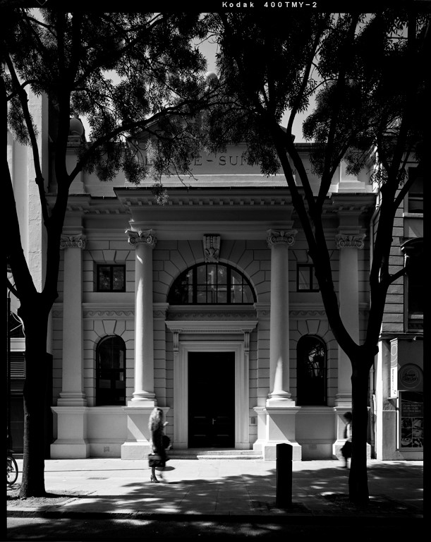
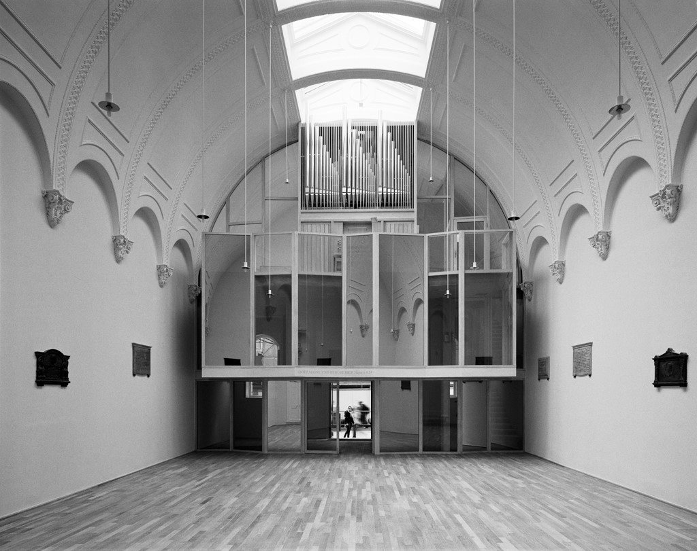
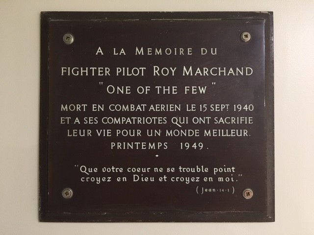
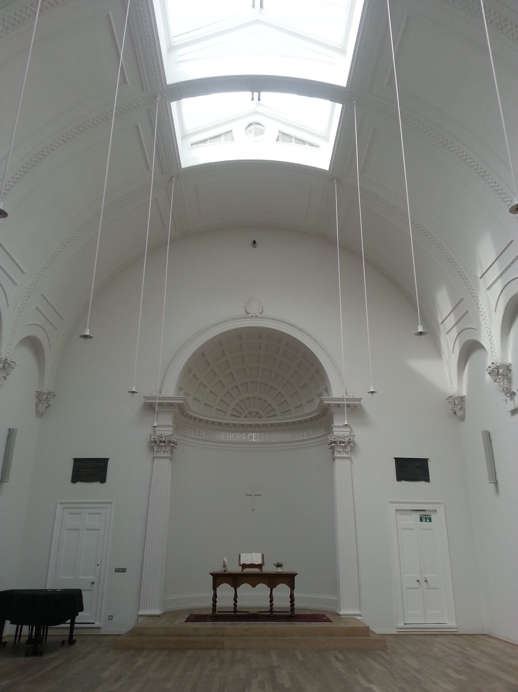

Nicht weit von der Londoner Theaterwelt ‹West End› und dem weltbekannten ‹Covent Garden› steht die Schweizer Kirche in London. Eingereiht in eine Häuserfront bleibt sie dem vorbei eilenden Passanten oft verborgen, doch wer den Blick nach oben richtet, sieht die goldenfarbene Bibel und die Worte EGLISE SUISSE in der Kuppel. Die bescheidene Endell Street, die zwischen den von Touristen besser frequentierten Strassen Neal Street und Drury Lane liegt, wurde 1846 gebaut. Die Schweizer Kirche in London ist das einzige damals erstandene Bauland, das seither nie die Hand gewechselt hat und stets im Besitz der Schweizer Kirchgemeinde war.
Swiss Church London, eine «stille Betrachterin» in der Endell Street. (Bild: Carla Maurer)
Eine Kirche für die Schweizer Kolonie am Leicester Square
Die Eglise Helvétique in London wurde 1762 von einer Gruppe ausgewanderter Schweizer und Schweizerinnen gegründet, die offiziell gar keine Schweizer waren, da die Mehrheit aus Genf, Waadt und Neuenburg stammten, Kantone, die damals noch nicht zur Eidgenossenschaft gehörten. Bereits in den 1680er Jahren hatten sich einige hundert Personen aus Schweizer Gebieten um den Leicester Square angesiedelt, so dass man erstmals von einer Schweizer Kolonie sprechen kann. Viele waren Nachkommen hugenottischer Flüchtlinge aus Genf, die sich aber mittlerweile mehr mit dem Genfer Stadtstaat als mit den französischen Vorfahren identifizierten. Noch heute zeugt eine Schweizer Uhr und ein Uhrenwerk mit Schweizer Kantonsflaggen am Leicester Square von der Verbindung der Schweizer Gemeinschaft mit dem zentralen Londoner Stadtteil.
Die frisch gegründete Kirchgemeinde mietete zuerst Räumlichkeiten, bis dann 1775 die erste ‹Helvetic Chapel› in Soho errichtet wurde. Die Gemeinde war hauptsächlich französchsprachig. Die Erinnerungstafeln im aktuellen Kirchengebäude erinnern bis heute an die sprachlichen Wurzeln, sowie an die Gründungsmütter und -väter. Bis 1817 nahm der jeweils amtierende Pfarrer auch eine konsulare Funktion wahr, da es noch keine Botschaft gab, und stellte ‹Pässe› aus.
Das aktuelle Gebäude an der Endell Street 79 wurde 1855 eingeweiht. Während des Ersten Weltkriegs stiessen deutschsprachige Schweizer zur Gemeinde, da die deutschen Gemeinden in London ihre Kirchen schliessen mussten. Die deutschsprachige Schweizer Gemeinde ging dann aber vorerst ihren eigenen Weg, bis die französisch- und deutsachsprachigen Gemeinden sich 1938 zusammenschlossen, wenn auch mit getrennten Gottesdiensten. Im Jahr 1983 wechselte die Gottesdienstsprache zu Englisch. Heute sind die Gottesdienste konfessions- und sprachübegreifend ausgerichtet. Von 1933–2018 war die Schweizer Kirche in London Mitglied des Schweizerisch Evangelischen Kirchenbundes. Mit der neuen Verfassung hat der SEK (heute: EKS) die formelle Beziehung zu den Kirchen im Ausland aufgelöst. Die Schweizer Kirche in London ist seither strukturell und finanziell von der EKS unabhängig, pflegt jedoch zahlreiche Kontakte zu Schwestergemeinden und Kantonalkirchen in der Schweiz, die die Gemeinde finanziell mittragen.
Nach einem verheerenden Brand 1930 und den schweren Beschädigungen während des zweiten Weltkriegs, musste die Kirche fast ganz neu gebaut werden. Die Schweizer Kirche wurde zwischen 2008–2011, nach den Plänen des Basler Architekturbüros Christ und Gantenbein, renoviert. Sie ist inspiriert vom Konzept der ‹White Cube Gallery› (eine bestimmte Galerieästhetik geprägt von weissen Wänden und einer viereckigen Raumstruktur). Zeitgenössische Kunst und sakraler Raum befinden sich seither in einem steten Dialog.
Swiss Church London, nach den Plänen des Basler Architekturbüros Christ und Gantenbein 2008–2011 renoviert. (Bild: Carla Maurer)
‹Herstory› und ‹History› in der Endell Street – die Kirche als «stille Betrachterin»
Die Kirche wurde Zeugin vieler historischer Ereignisse in der Endell Street. Unmittelbar gegenüber, wo sich heute die in den 1980er Jahren erbauten Sozialwohnungen des Dudley Court befinden, stand im 19. Jahrhundert das St Giles and St George Workhouse. Workhouses in Grossbritannien waren Institutionen, die während des Paupersimus (die Verelendung grosser Bevölkerungsteile im Zuge der Industrialisierung) Menschen aufnahmen, die sich nicht selber unterstützen konnten. Sie fanden Arbeit, Mahlzeiten und ein Dach über dem Kopf. Die Zustände in diesen Workhouses waren allerdings trostlos und eine allerletzte Anlaufstation, wenn alle Stricke rissen. Für einen Tag harte Arbeit gab es eine dünne Suppe und ein filziges Bett. Männer und Frauen wurden getrennt, und Kinder oftmals von ihren Eltern weggenommen. Das St Giles and St George Workhouse soll besonders trostlos gewesen sein und auch als Vorlage für den Roman «Oliver Twist» gedient haben. Eines der Opfer von Jack the Ripper, Polly Nichols, soll hier ebenfalls in einem Akt letzter Verzweiflung angeklopft haben.
Eine Plakette erinnert noch heute an die spätere Funktion des historischen Gebäudes während des Ersten Weltkrieges. Ärztinnen und die Sufragetten, Dr. Flora Murray (1869-1923) und Dr. Louise Garrett Anderson (1873-1943), haben hier das erste durchgehend von weiblichem Personal ausgestattete Militärspital aufgebaut und geleitet. Zum ersten Mal war es Ärztinnen erlaubt, nicht nur Frauen und Kinder, sondern auch Männer zu behandeln. Zu Beginn wurde das Anliegen der beiden Pionierinnen von der britischen Regierungen zwar mit dem Ratschlag ‹Geht besser Socken stricken!› abgetan, worauf Flora und Louisa zunächst Soldaten in Paris behandelten. Als die Anzahl von Fällen, die medizinische Hilfe benötigten, jedoch rapide zunahmen und die etablierten Spitäler in London überfordert waren, hat man die beiden Frauen kurzerhand zurückgeholt und sie gebeten, im ehemaligen Workhouse ein Spital zu errichten. Tag und Nacht bimmelte die Spitalglocke, die Verletzte vom Charing Cross Bahnhof ankündigten, und diese Glocke war sicher auch öfters während des Sonntagsgottesdienstes in der Schweizer Kirche zu hören. Wichtige medizinische Fortschritte im Bereich Wundbehandlung sind dem medizinischen Personal des aussergewöhnlichen Spitals zu verdanken.
Gegen Ende des Krieges und bis ins Jahr 1919 hinein wurden auch Opfer der Spanischen Grippe im Endell Street Military Hospital behandelt. Viele Krankenschwestern erlagen dem unbekannten Virus. Im Dezember 1919 wurde das Krankenhaus geschlossen. Für die Frauen war nach der Rückkehr der Männer kein Platz mehr in Spitalbetrieben. Sie mussten sich mit einer Anstellung als Hausmädchen begnügen oder heirateten. Die Schweizer Kirche war stille Zeugin dieses Geschehens.
Eine in die Wand eingelassene Plakette in der Schweizer Kirche erinnert an die tragische Geschichte eines jungen Mannes, Roy Achille Marchand (1918–1940), ein Militärpilot mit Schweizer Wurzeln, der im «Battle of Britain» 1940 im Luftkampf im zarten Alter von 22 Jahren ums Leben kam. Er hinterliess seine schwangere Frau. Marchand war der Nachkomme einer Uhrenmacherfamilie aus St. Imier und kehrte oft nach Biel zurück, von wo sein Vater nach London ausgewandert war.
Plakette als Erinnerung an den Militärpiloten mit Schweizer Wurzeln, Roy Achille Marchand (1918–1940). (Bild: Carla Maurer)
Traditionelle und ‹Fresh Expressions› von Kirche –
Wenn säkular und sakral zusammenfinden
Heute wird die Schweizer Kirche in London auf vielfältige Art und Weise genutzt. Jeden zweiten Sonntag trifft sich die Kirchengemeinde zum Gottesdienst in reformierter Tradition mit ökumenischer Ausrichtung, gefolgt von einem gemeinsamen Mittagessen. Katholikinnen und Reformierte beten hier gemeinsam mit Menschen anderer Religionen und mit Menschen agnostischer und evangelikaler Frömmigkeit.
Die Schweizer Kirche ist ein wichtiger Ort der Freundschafts- und Kulturpflege für die Schweizer Gemeinde in London. Fondueessen, Samichlaus, Räbeliechtliumzug, die Übertragung der Fussballspiele der Schweizer Fussballnationalmannschaft und die 1. August Feier gehören ebenfalls in den Kirchenkalender. Die Kirche ist auch eine Anlaufstelle für Schweizer und Schweizerinnen in seelischer oder finanzieller Notlage. Das Leben in der Grossstadt kann oft unerwartet schwierig sein, besonders für Neuzuzüger. Konfirmationsklassen und Gemeindegruppen aus der Schweiz kommen oft auf ihren Englandreisen zu Besuch und haben die Gelegenheit, mit obdachlosen Menschen zu sprechen, die jeden Dienstagmorgen zum Frühstück in der Schweizer Kirche zusammenkommen.
Die Etablierung der Schweizer Kirche als zeitgenössischer Kunstraum prägt die Londoner Kirche im Sinne der britischen ‹Fresh Expression of Church› Bewegung und ermöglicht säkularen Kunstschaffenden einen niederschwelligen und kreativen Zugang zum sakralen Raum, indem Weltbilder und Glaubensfragen kritisch reflektiert werden können. Das Kunstprogramm wird vom ‹Art Committee› konzipiert und geleitet, welches sich aus Kunstschaffenden und Vertreterinnen der Kirche zusammensetzt.
Der Chorraum der Schweizer Kirche wird geziert von den Worten aus dem Johannesevangelium «Je ne metterai pas dehors celui qui vient à moi» (Joh 6,37).
Beim Verlassen der Kirche begleiten die Worte «Gott segne und behüte Dich» hinaus in die bewegten Strassen Londons.
Swiss Church London, Chor. (Bild: Carla Maurer)
Carla Maurer ist seit 2013 Pfarrerin in der Schweizer Kirche in London.
Weitere Artikel von {{ author.author }} finden Sie hier:
Zur Vertiefung:
- Roehrich/Reverdin/Beguin: «The Swiss Church In London», London 2012 (direkt bei der Swiss Church in London zu beziehen).
- Barber, Peter: «A Curious Colony: Leicester Square and the Swiss», London 2011.
- Moore, Wendy: «Endell Street», London 2020.
- Rubenhold, Hallie: «The Five. The Untold Lives of the Women Killed by Jack the Ripper», London 2019.
- Webseite der Swiss Church London, verfügbar unter:https://swisschurchlondon.org.uk (04.02.2022).
- Auf einen Kaffee mit Carla Maurer, verfügbar unter:https://www.youtube.com/watch?v=lfAMHqu5hiA (04.02.2022).